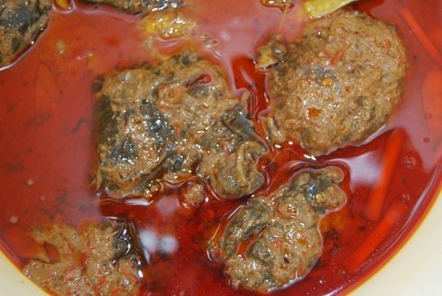
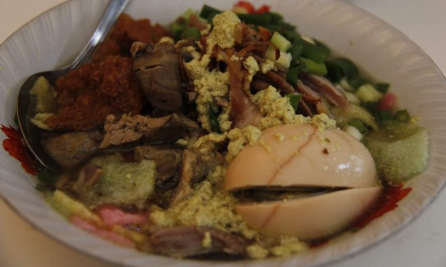
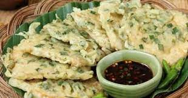

Buntil
Makanan khas yang biasanya diburu para wisatawan baik lokal maupun luar daerah yang sedang berlibur adalah buntil. Rasa gurih khasnya menjadi salah satu alasan mengapa banyak orang yang menyukai makanan satu ini. Padahal, buntil ini berbahan dasar daun pepaya yang dikenal memiliki rasa pahit.
Namun, dengan pengolahan dan bumbu tertentu menjadikan makanan yang satu ini lezat untuk dinikmati. Bumbu yang digunakan yaitu lengkuas, cabai, bawang dan garam. Sedangkan untuk menambah rasa gurihnya, buntil diberi parutan kelapa yang dicampur dengan ikan teri.
Soto Kriyik
Berkunjung ke Purbalingga kurang afdol rasanya jika tidak mencoba makanan terkenal ini. Soto Kriyik merupakan makanan khas yang selalu menjadi incaran para wisatawan yang berlibur ke Purbalingga. Pasalnya, kelezatan dari makanan berkuah ini tidak bisa ditemukan di daerah lainnya.
Soto kriyik terbuat dari kombinasi berbagai bahan makanan. Untuk isinya yaitu mie bihun, kecambah dan lontong. Sedangkan, agar rasa yang dihadirkan semakin nikmat, biasanya diberi tambahan jeroan dan ayam. Jika Anda menyukai hidangan pedas, maka Anda dapat menambahkan sambal kacang di dalam makanan ini.
Mendoan
Makanan selanjutnya yang harus Anda coba di Purbalingga adalah tempe mendoan. Kuliner ini menjadi primadona di daerah Jawa Tengah karena kelezatannya. Bagi Anda yang belum mengenal mendoan itu apa, makanan ini merupakan sebuah hidangan yang terbuat dari tempe kedelai yang digoreng dengan menggunakan tepung terigu.
Menariknya, makanan ini dibuat dengan tempe khusus yang mempunyai bentuk tipis. Untuk menghasilkan rasa gurih dan nikmat, tempe tipis ini dimasukkan ke dalam tepung berbumbu. Selanjutnya, tempe yang sudah dilumuri adonan tepung akan melalui proses penggorengan dengan minyak panas.